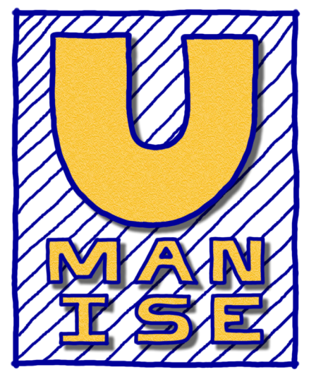
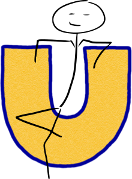

Wat doet Umanise?
Umanise vermenselijkt techniek.Die 'U' in het logo is niet voor niets zo groot. Hij staat voor de drie kernprincipes van Umanise:
- de u van User: de gebruiker staat altijd centraal
- de u van Usability & User Experience: daar wordt de gebruiker blij van
- de u van U de klant: uw product, uw concurrentiepositie en uw winst worden geoptimaliseerd
Hoe doet Umanise dat?
Op basis van onder andere de onderstaande onderzoeken bij en met uw doelgroep geef ik u gefundeerde, concrete en oplossingsgerichte adviezen hoe uw product een zo hoog mogelijk gebruiksgemak en gebruikservaring kan krijgen.Wat heeft u er aan?
Een systeem dat optimaal aansluit op de situatie, context en de wensen van uw doelgroep zorgt voor:- Een hoger gebruiksgemak en een prettigere gebruikservaring
- Een tevreden gebruiker
- Efficiënter gebruik van uw product
- Meer (terugkerende) bezoekers
- Een sterkere concurrentiepositie
- Meer besparing en winst

Wie is Umanise?
Umanise is Teun Blijlevens.Ik ben en woon momenteel in Wildervank. Jaar geleden heb ik een usability opleiding afgerond aan de Hanzehogeschool Groningen, genaamd Human Technology. Sindsdien ben ik gegrepen door de vraag hoe technologie zo gemakkelijk mogelijk kan worden gemaakt, zodat mensen het ten volle kunnen benutten om hun dagelijks leven te verbeteren en vergemakkelijken. En met mensen bedoel ik 'gewone' mensen, dus ook mensen zonder techniekknobbel. Mijn werk met Umanise geeft mij de kans continu met deze passie bezig te zijn. Ook ben ik bezig met de opleiding Informatica aan de Open Universiteit. Hierdoor ben ik in staat om de dingen die ik aan mijn klanten adviseer ook zelf te bouwen. Naast dat het een vollediger service biedt aan de klant vind ik het ook erg leuk om te doen.
Ook in mijn vrije tijd ben ik veel bezig met het testen van nieuwe technologieën, apps en tools. Dit doe ik met name op het gebied van home automation. Een paar voorbeeldjes. Thuis hoef ik maar te roepen 'Kijk House of Cards' en de tv gaat automatisch de serie afspelen. De lichten gaan een kwartier voor zonsondergang automatisch aan. Wanneer ik in de auto stap gaat automatisch mijn favoriete muziek spelen, worden binnenkomende berichten voorgelezen en kan ik met mijn stem de navigatie naar een adres aanzetten. Naast dat het erg leuk is om in elkaar te flansen, leer ik hiermee ook veel over een nieuw domein in mijn vakgebied, namelijk de usability van voice interfaces. Voor voorbeeld video's zoek je in YouTube op 'Autovoice Home automation'.
Bekijk meer over mij, mijn werkervaring en aanbevelingen van mijn opdrachtgevers bij mijn portfolio en op mijn LinkedIn.